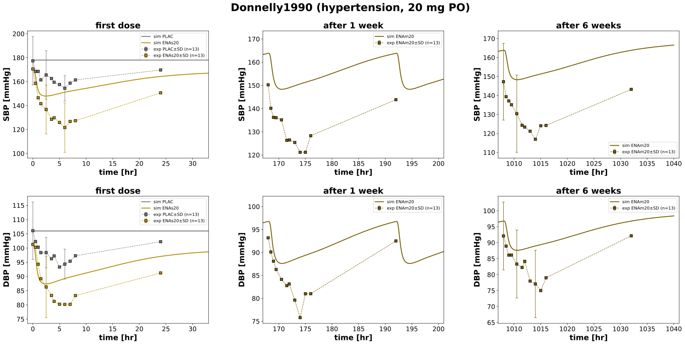
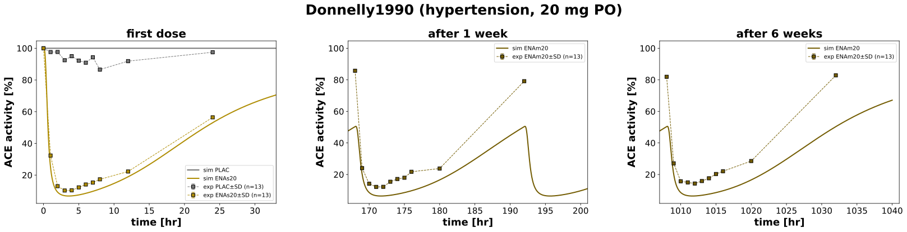
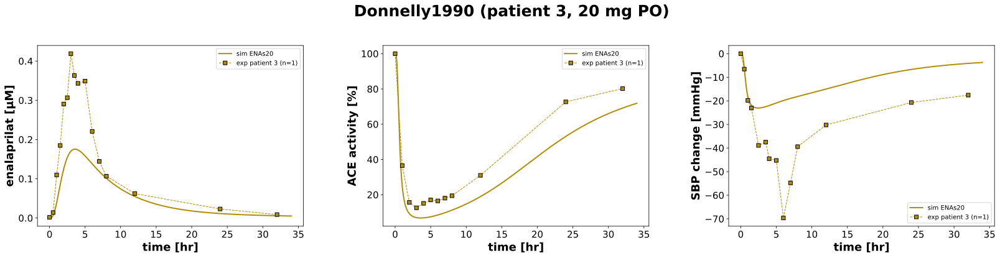

Overview
Models
| model | source |
|---|---|
| model | enalapril_body_flat.xml |
Datasets
Figures (3)






Code
"""Simulation experiment of the study Donnelly1990."""
from typing import ClassVar, override
from pkpdsim.metadata import (
ApplicationForm,
DataType,
Dosing,
Fasting,
Genotype,
Health,
PKPDData,
PKPDMappingMetaData,
Route,
Tissue,
)
from sbmlsim import Q
from sbmlsim.data import DataSet
from sbmlsim.fit import FitData, FitMapping
from sbmlsim.plot import Axis, Figure
from sbmlsim.simulation import Simulation
from sbmlsim.units import Quantity
from pkdb_models.models.enalapril import MODEL
from pkdb_models.models.enalapril.experiments.base_experiment import (
EnalaprilSimulationExperiment,
)
class Donnelly1990(EnalaprilSimulationExperiment):
"""Simulation experiment of Donnelly1990.
13 patients with mild to moderate essential hypertension (normal serum
creatinine, no BW reported): placebo once daily for 3 weeks, then 20 mg
enalapril maleate (tablet) once daily for 6 weeks, each study day after an
overnight fast. Four 8 hr study days: placebo (PLAC), the first dose
(ENAs20), after 1 week (dose of day 8 at 168 hr) and after 6 weeks (dose
of day 43 at 1008 hr, ENAm20). Erect blood pressure (Fig1), plasma ACE
activity (Fig2) and patient 3 (Fig3, enalaprilat, ACE activity and the
placebo corrected fall of the systolic blood pressure).
The reference of the blood pressure is the erect predose value of the
subjects (text p.303): 171/101 mmHg before the first dose, 178/106 mmHg on
the placebo day. The ACE activity is relative to the predose activity of
the first dose (39.3 EU/ml), the activity of the treatment weeks is
rescaled to it in the data copy (predose 33.7 and 32.2 EU/ml). The Emax of
the ACE inhibition (Tab2) is a parameter of the effect model of the paper,
not an observation, and is not mapped: ACE inhibition Emax about 100 %,
C50 19.8 ng/ml (first dose), 33.4 and 31.3 ng/ml (1 and 6 weeks).
"""
interventions: ClassVar[list[str]] = ["PLAC", "ENAs20", "ENAm20"]
# placebo grey, dose regimen (single < multiple) in yellow shades
colors: ClassVar[dict[str, str]] = {
"PLAC": EnalaprilSimulationExperiment.placebo_color,
**EnalaprilSimulationExperiment.dose_colors(["ENAs20", "ENAm20"]),
}
#: erect predose blood pressure (SBP, DBP) [mmHg] (text p.303)
blood_pressures: ClassVar[dict[str, tuple[float, float]]] = {
"PLAC": (178, 106),
"ENAs20": (171, 101),
"ENAm20": (171, 101),
}
#: the study days: label and time window [hr] of the panels
days: ClassVar[dict[str, tuple[str, float, float]]] = {
"day1": ("first dose", -1, 33),
"week1": ("after 1 week", 167, 201),
"week6": ("after 6 weeks", 1007, 1041),
}
#: the interventions plotted per study day
day_interventions: ClassVar[dict[str, list[str]]] = {
"day1": ["PLAC", "ENAs20"],
"week1": ["ENAm20"],
"week6": ["ENAm20"],
}
@override
def datasets(self) -> dict[str, DataSet]:
dsets = {}
for fig_id in ["Fig1", "Fig2", "Fig3"]:
df = self.load_dataframe(fig_id)
for label, df_label in df.groupby("label"):
label = str(label)
dset = DataSet.from_df(df_label, self.ureg)
if label.endswith("_enalaprilat"):
dset.unit_conversion("value", 1 / self.Mr.eat)
dsets[self.to_sid(f"{label}")] = dset
if label.startswith("ENAm20"):
# the study days of the multiple dosing for the figures
for day, (_, tmin, tmax) in self.days.items():
df_day = df_label[df_label.time.between(tmin, tmax)]
if not df_day.empty:
dsets[self.to_sid(f"{label}_{day}")] = DataSet.from_df(
df_day, self.ureg
)
return dsets
def _changes(self, intervention: str) -> dict[str, Quantity | float]:
"""Changes of an intervention: the blood pressure and the dose."""
sbp, dbp = self.blood_pressures[intervention]
changes = {
**self.default_changes(),
"SBP_ref": Q(sbp, "mmHg"),
"DBP_ref": Q(dbp, "mmHg"),
}
if intervention != "PLAC":
# enalapril maleate
changes["PODOSE_ena"] = Q(20, "mg") * self.Mr.ena / self.Mr.enamal
return changes
@override
def simulations(self) -> dict[str, Simulation]:
simulations = {}
# the placebo day, no drug
simulations["po_PLAC"] = Simulation(
time_unit="hr",
end=34,
preinit_changes=self._changes("PLAC"),
)
# the first dose
simulations["po_ENAs20"] = Simulation(
time_unit="hr",
end=34,
preinit_changes=self._changes("ENAs20"),
)
# 20 mg once daily for 6 weeks: doses at 0, 24, ..., 1008 hr, the study
# days after 1 week (168 hr) and 6 weeks (1008 hr)
simulations["po_ENAm20"] = Simulation(
time_unit="hr",
end=1040,
preinit_changes=self._changes("ENAm20"),
changes=[
self.add_doses(
[24 * k for k in range(1, 43)],
{"PODOSE_ena": Q(20, "mg") * self.Mr.ena / self.Mr.enamal},
),
],
)
return simulations
def _metadata(
self, intervention: str, data: PKPDData, data_type: DataType = DataType.MEAN
) -> PKPDMappingMetaData:
"""Metadata of a mapping of an intervention."""
return PKPDMappingMetaData(
# blood pressure and ACE activity of the plasma are no tissue of
# the model
tissue=Tissue.PLASMA if data == PKPDData.PK else Tissue.NONE,
route=Route.PO,
application_form=ApplicationForm.TABLET,
# the placebo was given once daily for 3 weeks
dosing=Dosing.SINGLE if intervention == "ENAs20" else Dosing.MULTIPLE,
health=Health.HYPERTENSION,
genotype=Genotype.NR,
# overnight fast before every study day
fasting=Fasting.FASTED,
data=data,
data_type=data_type,
)
@override
def fit_mappings(self) -> dict[str, FitMapping]:
mappings = {}
# Fig1 (blood pressure) and Fig2 (ACE activity)
for intervention in self.interventions:
for sid, name in {
"SBP": "blood pressure systolic",
"DBP": "blood pressure diastolic",
"ace_activity": "relative ACE activity",
}.items():
mappings[self.to_sid(f"fm_{intervention}_{name}")] = FitMapping(
self,
reference=FitData(
self,
dataset=self.to_sid(f"{intervention}_{name}"),
xid="time",
yid="mean",
yid_sd="mean_sd",
count="count",
),
observable=FitData(
self,
task=self.to_sid(f"task_po_{intervention}"),
xid="time",
yid=sid,
),
metadata=self._metadata(intervention, PKPDData.PD),
)
# Fig3: patient 3 after the first dose
for sid, name in {
"[Cve_eat]": "enalaprilat",
"SBP_change": "blood pressure systolic (change)",
"ace_activity": "relative ACE activity",
}.items():
mappings[self.to_sid(f"fm_ENAs20_P3_{name}")] = FitMapping(
self,
reference=FitData(
self,
dataset=self.to_sid(f"ENAs20_P3_{name}"),
xid="time",
yid="value",
yid_sd=None,
count="count",
),
observable=FitData(
self,
task="task_po_ENAs20",
xid="time",
yid=sid,
),
metadata=self._metadata(
"ENAs20",
PKPDData.PK if sid == "[Cve_eat]" else PKPDData.PD,
data_type=DataType.INDIVIDUAL,
),
)
return mappings
@override
def figures(self) -> dict[str, Figure]:
return {**self._figure_pd(), **self._figure_p3()}
def _figure_pd(self) -> dict[str, Figure]:
"""Blood pressure (Fig1) and ACE activity (Fig2) of the study days."""
figures = []
for fig_id, rows in {
"Fig1": {
"SBP": "blood pressure systolic",
"DBP": "blood pressure diastolic",
},
"Fig2": {"ace_activity": "relative ACE activity"},
}.items():
fig = Figure(
experiment=self,
sid=fig_id,
num_rows=len(rows),
num_cols=len(self.days),
name=f"{self.__class__.__name__} (hypertension, 20 mg PO)",
height=self.panel_height * len(rows),
width=self.panel_width * len(self.days),
)
plots = fig.create_plots(
xaxis=Axis(self.labels["time"], unit=self.units["time"]), legend=True
)
for kr, (sid, name) in enumerate(rows.items()):
for kc, (day, (day_label, tmin, tmax)) in enumerate(self.days.items()):
plot = plots[kr * len(self.days) + kc]
plot.set_title(day_label)
plot.set_xaxis(
self.labels["time"],
unit=self.units["time"],
min=tmin,
max=tmax,
)
plot.set_yaxis(self.labels[sid], unit=self.units[sid])
for intervention in self.day_interventions[day]:
# simulation
plot.add_data(
task=self.to_sid(f"task_po_{intervention}"),
xid="time",
yid=sid,
label=f"sim {intervention}",
color=self.colors[intervention],
)
# data
plot.add_data(
dataset=self.to_sid(
f"{intervention}_{name}_{day}"
if intervention == "ENAm20"
else f"{intervention}_{name}"
),
xid="time",
yid="mean",
yid_sd="mean_sd",
count="count",
label=f"exp {intervention}",
color=self.colors[intervention],
)
figures.append(fig)
return self.figures_by_sid(*figures)
def _figure_p3(self) -> dict[str, Figure]:
"""Patient 3 after the first dose (Fig3)."""
fig = Figure(
experiment=self,
sid="Fig3",
num_rows=1,
num_cols=3,
name=f"{self.__class__.__name__} (patient 3, 20 mg PO)",
height=self.panel_height,
width=self.panel_width * 3,
)
plots = fig.create_plots(
xaxis=Axis(self.labels["time"], unit=self.units["time"]), legend=True
)
for kp, (sid, name) in enumerate(
{
"[Cve_eat]": "enalaprilat",
"ace_activity": "relative ACE activity",
"SBP_change": "blood pressure systolic (change)",
}.items()
):
plots[kp].set_yaxis(self.labels[sid], unit=self.units[sid])
plots[kp].add_data(
task="task_po_ENAs20",
xid="time",
yid=sid,
label="sim ENAs20",
color=self.colors["ENAs20"],
)
plots[kp].add_data(
dataset=self.to_sid(f"ENAs20_P3_{name}"),
xid="time",
yid="value",
yid_sd=None,
count="count",
label="exp patient 3",
color=self.colors["ENAs20"],
)
return self.figures_by_sid(fig)
if __name__ == "__main__":
MODEL.run_experiments(Donnelly1990, output_dir=Donnelly1990.__name__)